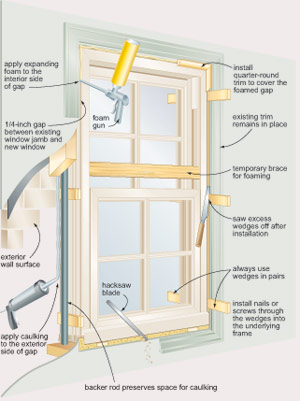
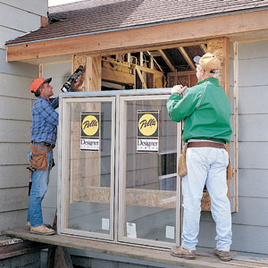
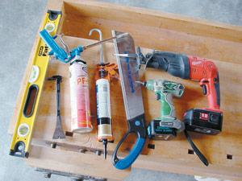
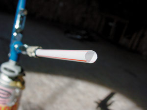

New windows can breathe fresh life into an older home, and they are one of the deciding factors in the longevity of any new structure. Successful window installation is possible even for beginning DIYers, but the approach you take depends on whether you’re replacing old windows in an existing structure or installing windows in a new building. I’ll show you both methods - the processes are similar, but there are key differences in techniques and products.
The time it takes to install a window depends on its size. Start with smaller windows; they are easier to install. Excluding the time taken to remove an old window, which can vary widely, I estimate installation takes two to four hours for someone with no previous experience.
Replacement windows are designed to slip within existing window jambs (the framed opening of a window) after the old sashes (the frame that holds the glass pane or panes of a window) have been removed. This is the simplest way to upgrade your windows, and you won’t have to add new trim or flashing because they were installed with the old window.
Start by measuring the width and height of your window opening, and then subtract an allowance for the gap required to let the new window fit easily and receive caulking. How much gap is enough? That depends; use a 24- or 48-inch level to determine if the top and bottom of your existing window opening are plumb and level.
If the opening is square and true, then a quarter-inch gap on all four sides will do nicely. But if your window opening has a bowed side or an area that’s not level or plumb, then give the gaps a larger width. Few things are more discouraging than suddenly discovering that your brand-new windows are too big to fit into the openings. If you think you’ll have trouble like this, order replacement windows that are 1 inch shorter and narrower than the opening. As added insurance, cut some rigid cardboard or thin plywood to the size you think your replacement windows should be. Try them in the opening and see how well they fit before you order new windows. Do you have a few windows that should be the same size on the same wall? Size them all to fit the smallest opening - that way you’ll maintain a consistent look and avoid the confusion of having many different window sizes to sort out on installation day. For your first window installation, choose an area that’s not a prominent location in the house.
Start by removing the old sash. There are infinite numbers of possible sash removal methods, but taking them out won’t be difficult; the idea is to create a clear path for your new window. You’ll probably need to pry off strips of wood or metal that previously guided the old sash. A thin-bladed “cat’s paw” pry bar is the ideal tool for demolition operations like this. A wire cutter and a putty knife are handy for pulling out old nails. Grab the nail with the cutter, place the putty knife underneath the jaws to protect the wood and then lever the cutter up, bringing the nail with it.
Using the illustration below as a reference, you’re now ready to set the window in place from inside your house. Be careful - there’s nothing to stop the window from tumbling right out and onto the ground, so it’s wise to have someone outside to help with alignment. Also, keep the window closed as you work so the frame retains its shape. The goal at this stage is simple: Position the window so it’s plumb both front to back and side to side, with an equal gap around the perimeter. To make this happen, you’ll need wooden wedges to fill the space between the new window and the old opening.
Install a pair of wedges under each bottom corner of the window, one driven in from the outside and another from inside. Window wedges are always permanent parts of the installation and are used in opposing pairs like this so they create support across the entire width of the unit. Adjust each pair of wedges so the sides of the replacement window are plumb. When everything looks good, install another pair of wedges along the side of the top corners of the window. Don’t tap them in too hard, but just enough so they take up the space.
With the window stabilized, you need to adjust its location so the window is right where you want it front to back in the opening. Aim to hide any evidence of the old sash and guide strips you removed earlier, while leaving enough room to install quarter-round trim around the interior perimeter of the window. Depending on your window size, you may need to install more wedge pairs at locations along the sides, top and bottom. Place them no more than 16 inches apart along the bottom and 24 inches apart along the sides. You won’t need any more wedges at the top of the window.
You’ve now come to the point where some careful adjustment is necessary. Use your level to examine all sides of the new window frame - they have to be plumb and square. To get the best results, tap each wedge pair in or out as needed and then check the movement of the window sash. When everything looks good and the sash opens nicely, you’re all set to lock the window in place permanently.
Ideally, you’ll want to drive screws or nails through some hidden area of the replacement window frame so they penetrate the wedges and sink into the old frame without being seen. Aim for at least 1 inch of penetration for screws, or 1 1/2 inches for finishing nails. You need to put these fasteners where they’re not seen, and that depends on the window design. Some replacement windows include removable sash tracks that you can lift out, drive screws into and then cover again. With others, you may have to sink 3-inch finishing nails into a corner formed by the window frame and some trim. Some windows make it easy to hide fasteners, and others demand imagination.
At this stage, you have a nice, new replacement window in place, though you can still see daylight shining in through gaps around the perimeter. This is where expanding polyurethane foam can help; you want to use a low-expansion formulation to seal the gaps. Make sure you do a good job sealing all the openings because failure to do so could compromise your new window’s overall energy efficiency. As added insurance against the nightmare of a window frame bowed by pressure from the expanding foam, cut wood braces that fit within the window frame and stay there by friction, positioning them against the inward pressure of the expanding foam (see illustration). You’ll be fine if you place braces between wedge locations.
Before you spray the foam, weatherproof the outside joint around the perimeter of the new window. The best option is to stuff lengths of a cylindrical foam packing material called “backer rod” into the gap between window and frame. Choose backer rod with a diameter that’s twice as wide as the gap, and then push it in to a depth that’s equal to the gap width. This creates a square groove that’s perfect for caulking. One length of masking tape laid down on each side of the outside joint is the easiest way to achieve neat caulking results. Pump the caulking in, smooth it with your fingertip and then immediately peel off the tape.
Next, inject foam as deeply as you can within the gap along all interior edges and don’t worry about excess ooze. Just let the foam completely harden (at least six hours) and then trim off the excess with a hacksaw blade. This kind of blade is flexible enough that you can bend it flush with the surface as you cut, giving you exceptionally clean results.
The final interior step is the installation of wooden trim to cover the foamed gap and joints between the replacement window and the old window frame - this way, you’ll get some practice with the miter joints. Standard quarter-round wood trim is perfect for this job, but it’s not the only choice. You can use any trim that fits within the 90-degree corner formed where the replacement window meets the old jamb. If you’re using hardwood, pre-drill holes for the finishing nails to prevent splits.
The process of installing windows in new buildings is similar to replacement work, but with two key differences. Most modern window designs include an exterior mounting flange that reduces or eliminates the need for wedges. Also, you’ll need to pay much more attention to weatherproofing windows in new construction than with replacement work. There’s more to it than just applying caulk; new windows need to be incorporated into the exterior wall treatment of the building as it is raised.
These days, most window manufacturers are able to supply any size window for no more cost than relatively standard dimensions. This means you’re free to plan new window openings at any size or shape you want. Specify that your windows be 1 to 1 1/2 inches shorter and narrower than the rough openings. This gives you a generous half to three-fourths inch of wedge space on all sides for windows that require them.
Windows with mounting flanges require that you set them in place from the outside. The flanges also should have caulking applied to them before the windows go in. For added protection, line the rough window opening perimeter with a plastic sill protector and flashing. In the event that water penetrates the area around the window, these extras keep moisture from getting to the wood. Most windows have screw holes in the flanges for mounting purposes. For a secure installation, two pairs of wedges supporting the bottom of new-construction windows are often enough. As added insurance, install factory-finished aluminum flashing over the top of the window and under the exterior wall treatment.
That’s all it takes to upgrade your home’s windows. Making the investment in energy-efficient windows is not cheap, but installing them yourself can save you considerable cash over the long term and put you one step closer to self-reliance.
Professional foam guns are the most economical way to apply expanding poly foam, but here’s a trick that can help you get the foam deep into small cracks. Most foam guns include a nipple on the end of the applicator tip that’s designed to accept lengths of small plastic tubing or a drinking straw. Slip a piece of tubing over the end, secure it with electrical tape to hold it under application pressure and then get to work. There’s no neater way to apply foam in tight spaces.
|
 Len Churchill New windows can make your home more energy efficient - and add charm and style. With a little guidance and practice, even beginning DIYers can master this weekend home-improvement project. |
 Courtesy Pella Corp Reduce the cost of new windows by putting them in yourself. |
 Steve Maxwell Basic window installation tools (from left): 24-inch level, “cat’s paw” pry bar, foam gun, caulking gun, Japanese saw, impact driver and reciprocating saw. |
|
 Steve Maxwell |
|
|